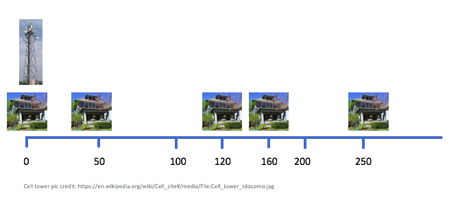
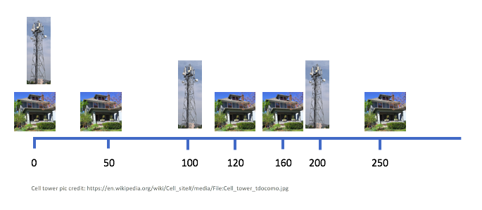
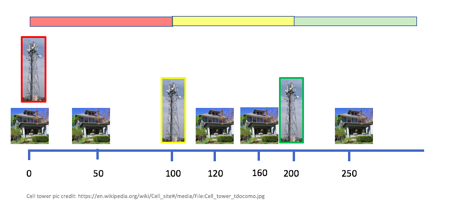
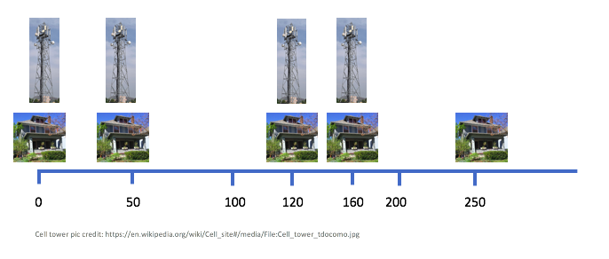
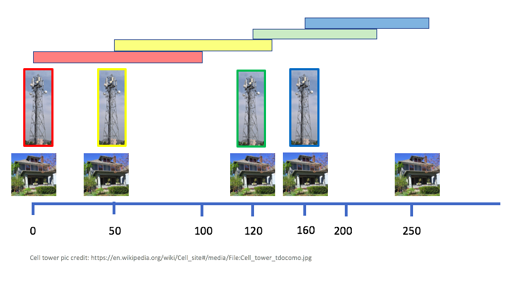

Notes for High Speed Internet problem
Notes for the High Speed Internet problem.
Material Developed by: Atri Rudra
Problem Overview
We begin with an example input to show the solutions to both part (a) and (b) (and in particular, pointing out why solving part (a) does not solve part (b)):
Sample Input/Outputs
- Input:

In the above $n=5$ and we have a cell tower at the first house since that is mandated by the problem. Also note that any two consecutive houses are at most $99$ miles apart (actually the largest distance in the above is $90$ miles). Note that in this case a valid input your algorithm should handle is $[ (1, 120), (2, 50), (3, 250), (4, 160) ]$, where in each pair the first index refers to a house (so in the example above the houses in order are $2,1,4,3$) and the second element of a pair is the distance in miles from the first house.
- Solution for part (a): Here is an optimal solution for part (a) for the above input:

Here is a quick visual argument for the above leads to continuous cell coverage:

We will see shortly that this is an optimal assignment for part (a).
- Solution for part (b): Here is an optimal solution for part (b) for the above input:

Here is a quick visual argument for the above leads to continuous cell coverage:

We will not prove it, but this is an optimal assignment for part (b).
Part (a)
Algorithm Idea
The idea is very simple: since we do not have any restriction on where the cell towers can be placed: we will place them at multiple of $100$ mile marks till there is continuous coverage from the first to the last house.
Even though it is not needed for the HW submission
We provide the algorithm details and proof of correctness idea below for your convenience.
Algorithm Details
//Input is (h1,d1), ... , (hn-1,dn-1)
// di is the distance of house hi from the first house
dmax= max(d1, ... ,dn-1)
d=0 //Assuming the first house is at mile 0
while( d < dmax)
Place a tower at mile d
d += 100
Proof (of Correctness) Idea
First note that the algorithm above places $\left\lceil \frac{d_{\max}}{100}\right\rceil$ many cell towers.
To complete the proof, we claim that any valid placement of towers must place at least $\left\lceil \frac{d_{\max}}{100}\right\rceil$ cell towers. For the sake of contradiction assume that we are able to come up with a valid placement with \[\le \left\lceil \frac{d_{\max}}{100}\right\rceil -1 < \frac{d_{\max}}{100}\] cell towers. Since each cell tower can cover $100$ miles, this means that the total number of miles covered will be \[<100\cdot \left(\frac{d_{\max}}{100}\right) = d_{\max},\] which means at least $1$ mile from the first house and the last house does not have cell coverage, which means that our placement was not valid.
Runtime analysis
We will assume the following, which you need to prove on your own:
Exercise 1
\[d_{\max}\le 99n.\]
while runs for at most $99n/100\le n$ times. Each iteration takes $O(1)$ time: so overall the loop takes $O(n)$ time. Since computing $d_{\max}$ takes $O(n)$ time, the overall runtime is $O(n)$, as desired.
Part (b)
We would like to point out two things:
- The algorithm above for part (a) does not work for part (b). The basic idea is that the algorithm from part
(a) can place a cell tower at a mile where there is no house but for part (b) the cell towers have to be at a house. See the sample input/output above for a concrete example. - Think how you could modify the algorithm for part (a) could be modified to handle the extra restriction that the cell towers have to placed next to a house.
Hint
Think of a greedy way to decide on which houses to pick for cell tower installation. It might help to forget about the scheduling algorithms we have seen in class and just think of a greedy algorithm from "scratch." Then try to analyze the algorithm using similar arguments to one we have seen in class.
Note
The proof idea for part (a) does not work for part (b): you are encouraged to use one of the proof techniques we have seen in class to prove correctness of a greedy algorithm.